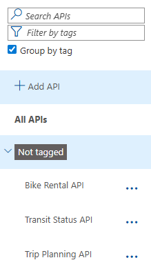
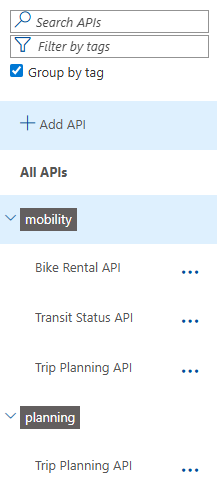
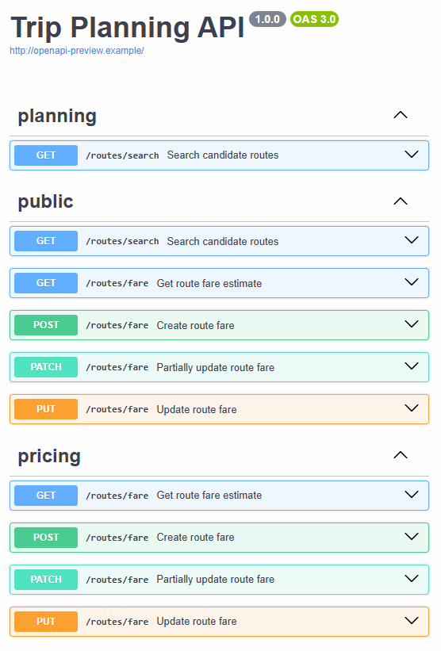
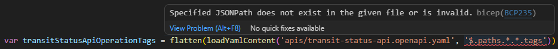
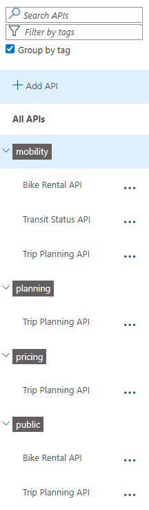

Grouping APIs in Azure API Management Using Tags

I’ve been working with Azure API Management on a project where we have a growing number of APIs. After a while, the list of APIs in the portal becomes hard to navigate. Fortunately, API Management supports tags that let you group and filter APIs in both the Azure Portal and the Developer Portal.
In this post I’ll show you how to assign tags to APIs using Bicep. I’ll also explore how to automatically extract operation-level tags from an OpenAPI specification and apply them to the API level, so you don’t have to maintain that list manually.
The examples are based on a sample I’ve created that includes three APIs: Bike Rental API, Transit Status API and Trip Planning API. Each API has a set of tags assigned at the API level, and the OpenAPI specifications can have additional tags defined at the operation level. The list below gives an overview:
- Bike Rental API
- API tags:
mobility - Operation-level tags:
public
- API tags:
- Transit Status API
- API tags:
mobility - No operation-level tags
- API tags:
- Trip Planning API
- API tags:
mobility,planning - Operation-level tags:
planning,pricing,public
- API tags:
Table of Contents
- The Problem: APIs Without Tags
- Registering and Assigning Tags in Bicep
- Bubbling Up Operation Tags Using JSONPath
- A More Robust Approach Using User-Defined Functions
- Considerations
- Conclusion
The Problem: APIs Without Tags
When you deploy an API using an OpenAPI specification, any tags defined on individual operations are not automatically applied to the API itself. If you navigate to the APIs in the Azure Portal and choose “Group by tag”, you’ll see that no tags have been assigned at the API level:

To get grouping and filtering to work, you need to explicitly assign tags at the API level.
Registering and Assigning Tags in Bicep
To add a tag to an API, you first need to register the tag in API Management and then assign it to the API. Here’s an example that registers the mobility tag and assigns it to the Bike Rental API:
resource mobilityTag 'Microsoft.ApiManagement/service/tags@2025-03-01-preview' = {
parent: apiManagementService
name: 'mobility'
properties: {
displayName: 'mobility'
}
}
resource bikeRentalApiMobilityTag 'Microsoft.ApiManagement/service/apis/tags@2025-03-01-preview' = {
parent: bikeRentalApi
name: 'mobility'
dependsOn: [
mobilityTag
]
}
The dependsOn on the API tag resource ensures that the tag is registered in API Management before it’s assigned to the API. Without it, the deployment might fail if both resources are deployed in parallel and the tag doesn’t exist yet.
Once all API tags for our sample are deployed and assigned, choosing “Group by tag” in the portal gives you the following view:

If we filter on e.g. the planning tag, we see only the Trip Planning API.
You can see the list with available tags in the Azure Portal by navigating to APIs > API Tags. You might see more than just the mobility and planning tags, because API Management automatically registers any tags it finds in the OpenAPI specifications when you deploy an API.
In our sample, the Trip Planning API has pricing and public tags on some of its operations, so those tags are also registered in API Management even though we haven’t explicitly defined them using the Microsoft.ApiManagement/service/tags resource.
Bubbling Up Operation Tags Using JSONPath
Looking at the Trip Planning API, the OpenAPI spec has pricing and public tags on individual operations. I wanted those tags to automatically appear at the API level without listing them explicitly.

My first approach was to load the OpenAPI spec using the loadYamlContent or loadJsonContent function and use the JSONPath expression $.paths.*.*.tags to select the tags from all operations:
var bikeRentalApiOperationTags = flatten(loadYamlContent('apis/bike-rental-api.openapi.yaml', '$.paths.*.*.tags'))
var bikeRentalApiTags = union(['mobility'], bikeRentalApiOperationTags)
resource addBikeRentalApiTags 'Microsoft.ApiManagement/service/apis/tags@2025-03-01-preview' = [
for tagName in bikeRentalApiTags: {
parent: bikeRentalApi
name: tagName
}
]
The loadYamlContent call uses the JSONPath expression $.paths.*.*.tags to extract the tags arrays from each operation in the spec. Since each operation can have multiple tags and this results in an array of arrays, flatten converts it into a single flat array. The union call merges those operation tags with the explicitly defined API-level tags (mobility) and deduplicates the result, which is needed because Microsoft.ApiManagement/service/apis/tags can only be defined once per API and tag combination. Finally, we loop over the combined tag list to create an API tag resource for each one.
But this approach has a downside. If the OpenAPI spec has no tags at all, the JSONPath expression returns nothing and the Bicep compilation fails:

This means you have to remember to add or remove the additional Bicep code whenever tags are added to or removed from an OpenAPI spec. That’s error-prone and tedious.
Note that
loadYamlContentandloadJsonContentdon’t allow you to use a parameter or variable for the file path, so you can’t wrap this logic in a reusable user-defined function.
A More Robust Approach Using User-Defined Functions
As an alternative, we can load the entire OpenAPI spec into a variable and write our own logic to extract the tags. The following two user-defined functions handle this:
@description('Extract tags from an operation object, returning empty array if no tags exist')
func getOperationTags(operation object) array => operation.?tags ?? []
@description('Extract all operation-level tags from an OpenAPI specification')
func extractOperationTags(openApiContent object) array =>
flatten(map(
items(openApiContent.?paths ?? {}),
pathItem => flatten(map(items(pathItem.value), operation => getOperationTags(operation.value)))
))
The getOperationTags function takes an individual operation object and returns its tags array. It uses the null-conditional operator (?tags) to avoid errors when the tags property is absent, falling back to an empty array via ?? [].
The extractOperationTags function works through the entire spec. It uses items to iterate over the paths object (falling back to an empty object if paths is missing), and for each path it iterates over the operations. For each operation it calls getOperationTags. The nested map and flatten calls collect all tags into a single flat array.
You can use these functions like this:
var tripPlanningApiOpenApiContent = loadYamlContent('apis/trip-planning-api.openapi.yaml')
var tripPlanningApiOperationTags = extractOperationTags(tripPlanningApiOpenApiContent)
var tripPlanningApiTags = union(['mobility', 'planning'], tripPlanningApiOperationTags)
The loadYamlContent call without a JSONPath expression loads the entire OpenAPI spec as an object, which avoids the compile-time failure we saw earlier. Calling union on the combination of API-level tags and operation tags ensures we get a deduplicated list.
Once deployed, the “Group by tag” view includes the tags that came from the operations:

One nice side effect of loading the full OpenAPI content into a variable is that you can reuse it when deploying the API itself:
resource tripPlanningApi 'Microsoft.ApiManagement/service/apis@2025-03-01-preview' = {
name: 'trip-planning'
parent: apiManagementService
properties: {
...
format: 'openapi'
value: string(tripPlanningApiOpenApiContent)
}
}
Instead of reading the file twice, you can pass the already-loaded content directly by converting it to a string. This keeps things tidy and avoids any inconsistency between the spec used for deployment and the one used for tag extraction.
Even if you don’t need the tag extraction, using
loadYamlContentorloadJsonContentinstead ofloadTextContenthas a practical advantage. TheloadTextContentfunction is limited to a file size of 131,072 characters, whileloadYamlContentandloadJsonContentsupport files up to 1,048,576 characters.
Considerations
There are a couple of things worth keeping in mind when working with API tags in API Management.
When an OpenAPI spec contains tags and you deploy it, API Management automatically creates those tags. If you also deploy a Bicep resource for the same tag in parallel and the tag doesn’t exist yet, you may run into a conflict because two sources are trying to create the same tag at the same time. The same issue can happen when deploying two APIs whose OpenAPI specs share the same tags. This only occurs the first time (when the tag doesn’t yet exist in API Management), but it can be an unexpected failure. You can work around it by adding explicit dependsOn references between the resources that would otherwise create the same tag in parallel.
Be careful when using deployment stacks. If you create a tag in one deployment stack and assign it to an API in a second stack, then remove the tag from the first stack and redeploy with actionOnUnmanage set to deleteAll, API Management deletes that tag. A subsequent redeployment of the second stack fails because the tag no longer exists.
Conclusion
Applying tags to APIs in Azure API Management is a straightforward way to keep a large API list manageable. Registering and assigning tags in Bicep is simple, but maintaining them manually can become tedious as your API surface grows.
Using user-defined Bicep functions to extract operation-level tags from OpenAPI specs is a clean way to keep tags in sync without adding maintenance overhead. The approach handles missing tags gracefully and avoids the compile-time failures you’d get with the JSONPath-based approach.
The full working sample is available here.